Grille épurée
Nouveau style de grille, par défaut : des barres de mesure verticales, rien d'horizontal. L'ancien (« Cells ») reste dans Aa → Grid.
La capture de Louis est l'ancienne page statique de juillet (inferred_bye_bye_blackbird.html) — ce style n'existait plus dans l'app. Bye Bye Blackbird n'est pas dans la bibliothèque : Autumn Leaves (iReal) le remplace.
La référence, et ce qu'on en a fait
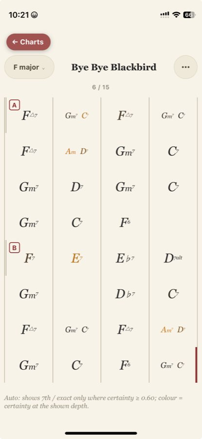
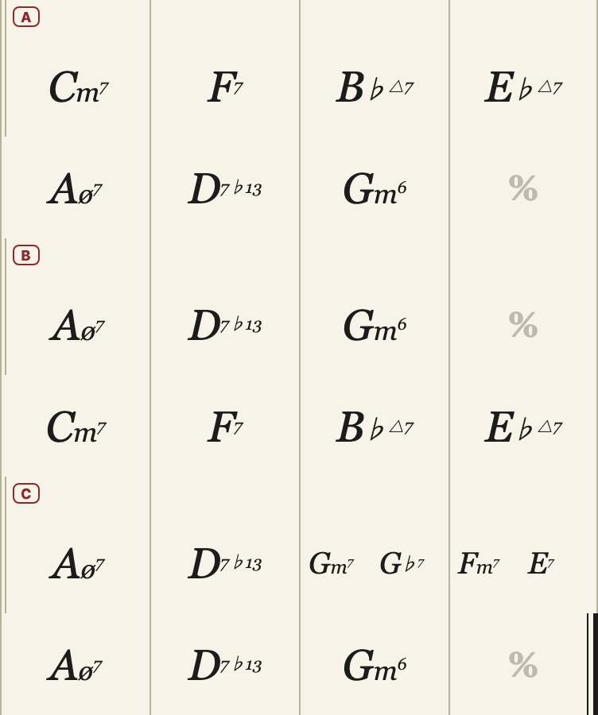
Ce qui change
- Plus de cadre, plus de traits horizontaux : seules les barres de mesure, continues sur toute la hauteur.
- Début de section : double barre fine ║ sur sa première rangée, et la lettre dans le haut de la rangée.
- Un accord seul sur le temps 1 est centré dans sa mesure.
- Rangées un peu plus hautes (+8 px) : c'est l'air qui sépare les lignes.
- Mesure jouée : une pastille teintée arrondie qui « pop », et la barre de droite qui s'allume en rouge.
- Fin du morceau : barre finale d'encre (fine + épaisse).
- La police des accords de la capture : Georgia italique non grasse, Gm⁷ (petit m, 7 en exposant), F△⁷, D⁷ᵃˡᵗ, E♭⁷ ; plus petite dès deux accords dans la mesure. Seulement en « Clean » + notation « Normal » (Compact et Cells gardent l'ancienne).
Autumn Leaves — iPhone 390 px
Standard iReal, 3 sections, mesures à 2 accords.
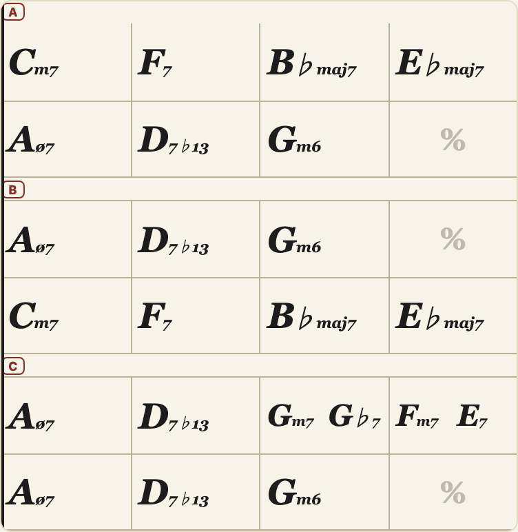
The Lazy Song — fins alternées + intro cachée
Quatre fins (A, A alt 1‑3) empilées ; l'intro muette ne s'affiche pas. Tête de lecture sur « A alt 1 ».
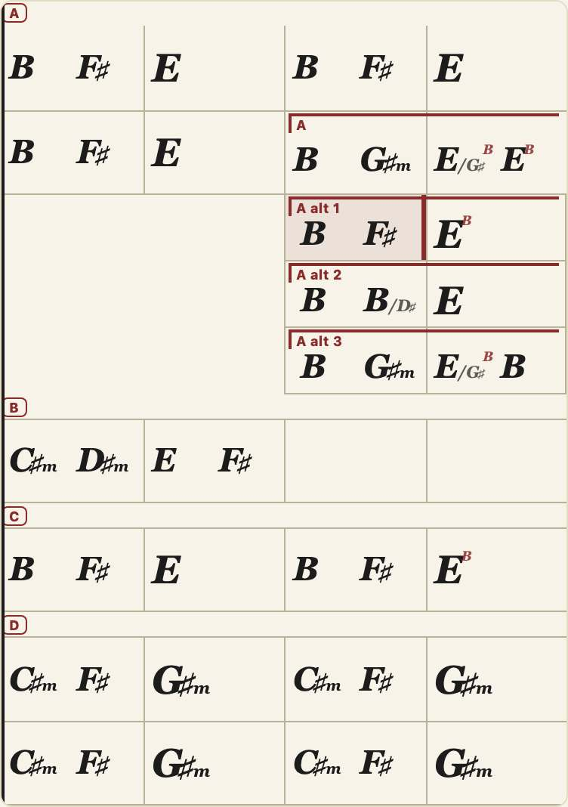
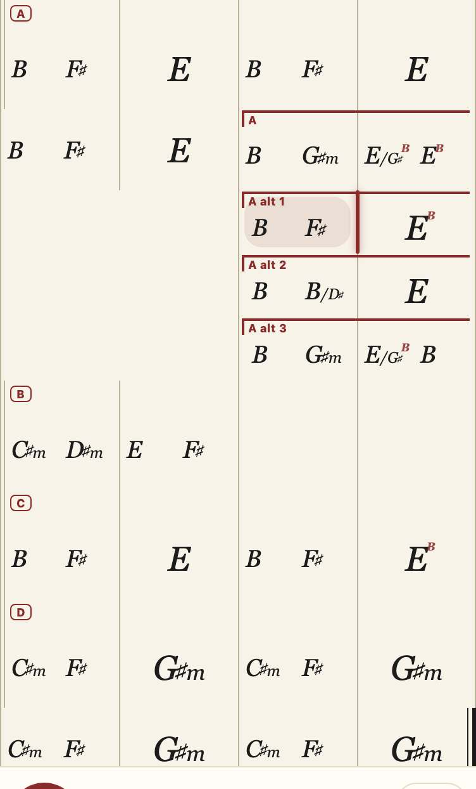
Stand By Me — intro cachée, tête de lecture
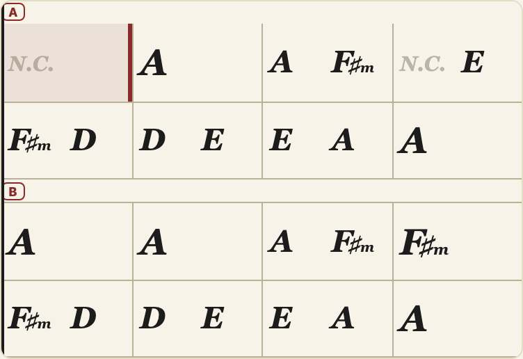
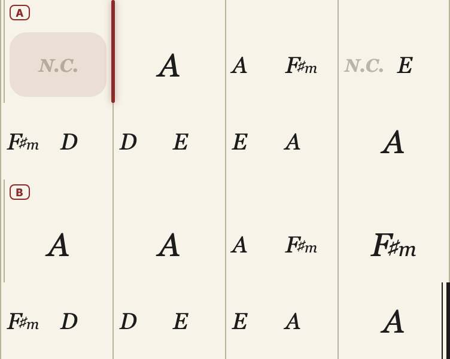
Virtual Insanity (iReal) — basses slash, sus, ♯5, ø, pédales
Le cas le plus dense : jusqu'à 4 accords par mesure, basses pendues (/G♭), D⁹ˢᵘˢ, B♭⁷♯⁵.
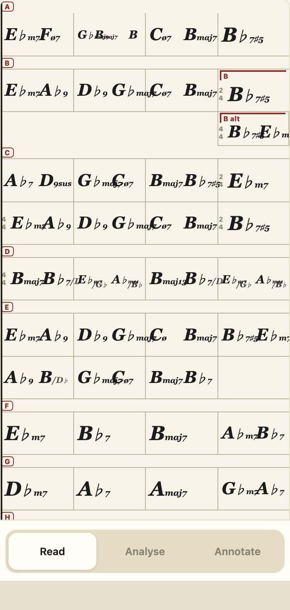
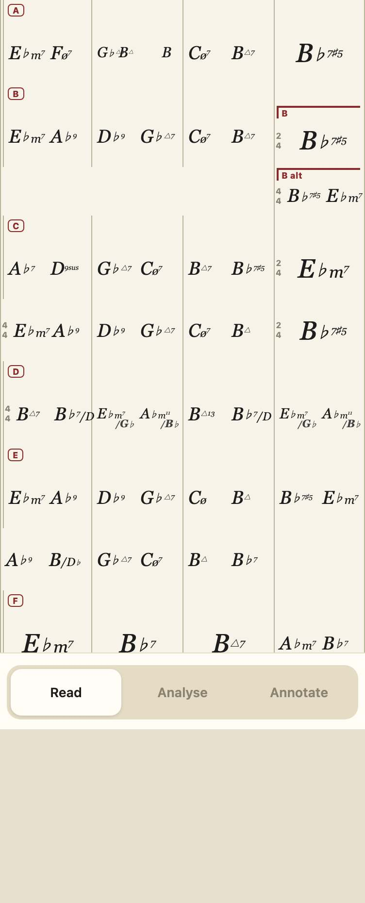
Les mêmes sur ordinateur (1100 px)
Autumn Leaves
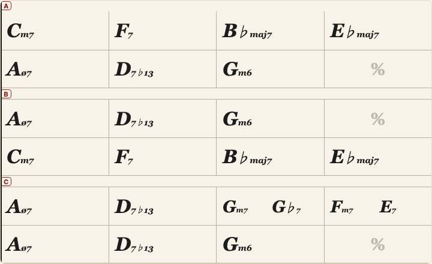
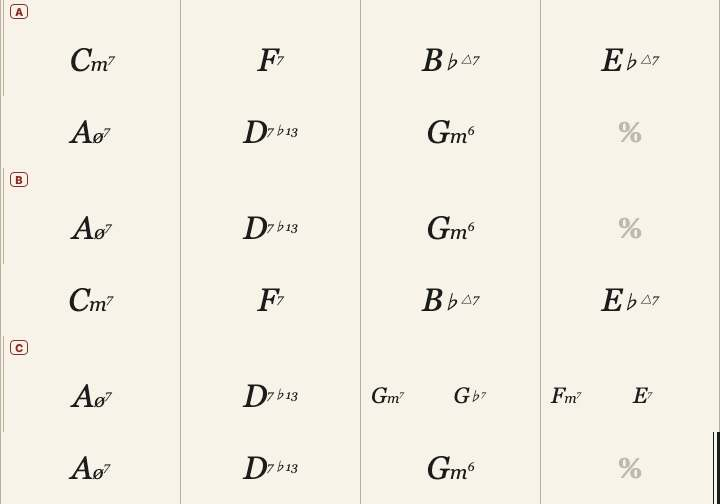
The Lazy Song
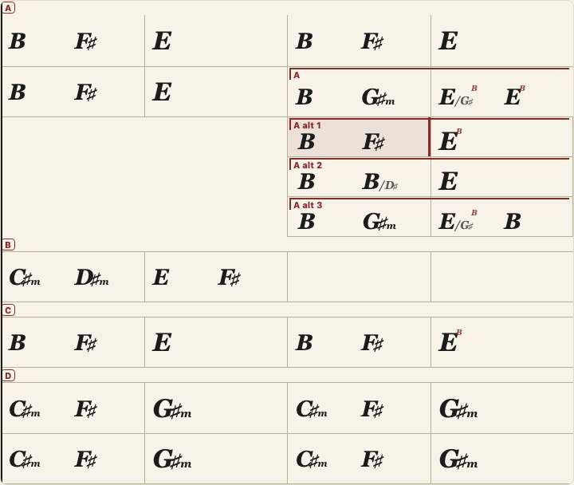
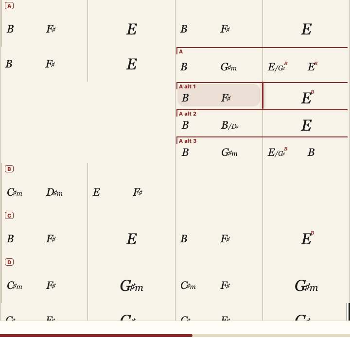
Stand By Me
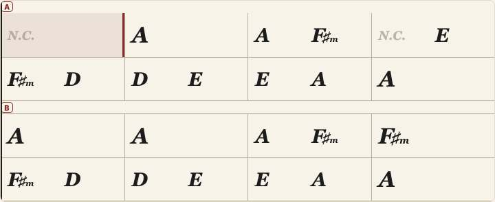
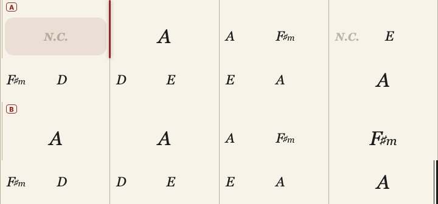
Virtual Insanity
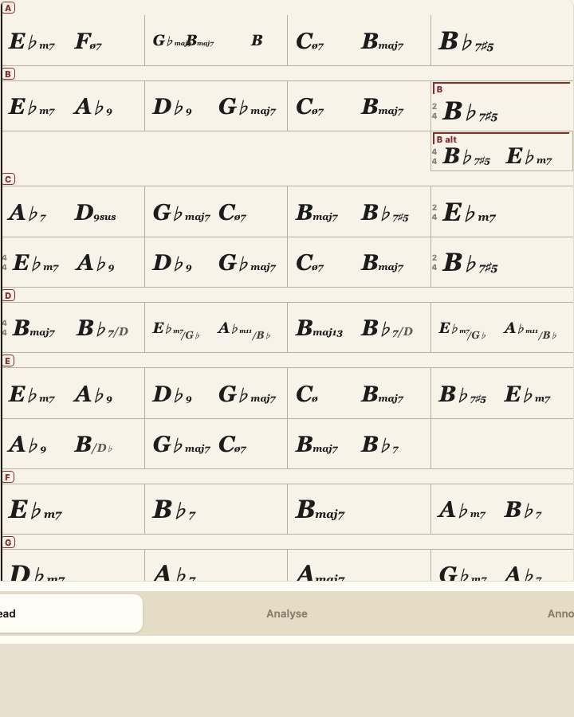
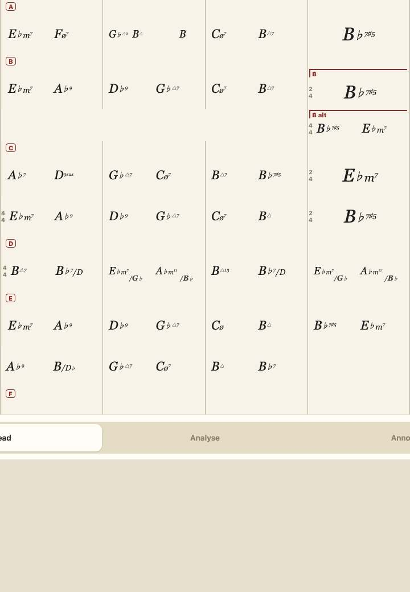
Tranché par Louis (2026-09-30)
- Épurée par défaut, accord seul centré, rangées +8 px : gardés.
- La police des accords de la capture : faite (ci-dessus).
Ouvrir dans l'app : Autumn Leaves · The Lazy Song · Stand By Me · Virtual Insanity